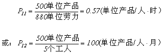
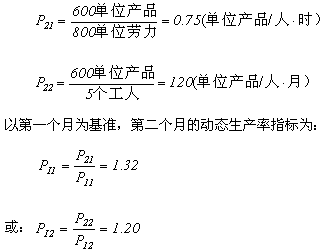
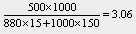
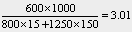
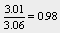

1 . 教学安排
2 . 生产率及提高生产率的意义
3 . 生产率测定
 生产率测定的意义
生产率测定的意义
生产率的种类
生产率计算公式
生产率测定的实施
我国工业生产率测定
4 . 生产率管理
5 . 提高企业生产率的途径
6 . 思考与练习题
 返回课程学习首页
返回课程学习首页
生产率测定的实施
进行生产率测定首先应做好数据采集和测定模型的选择。
(一)数据采集
1．产品数据
产品本身的有关资料是生产率测定的一个数据来源。
2．会计数据
会计数据是最直接和实际的数据来源。如果有详细的成本会计帐目，那么所有必要的数据就都可以得到。
3．作业测定数据
作业测定数据是指运用作业测定方法确定一个基准时期内生产每种产出所需要的劳动量(必要时，还要确定劳动的类型)及时间标准。这种数据是完成除了材料生产率以外的几乎所有生产率计算所必需的。
(二)生产率测定模型选择
生产率测定是为了满足管理上的需要，为管理决策提供依据。所以，选择什么样的生产率测定模型要以生产率管理的要求为依据。
1．单要素生产率模型
单要素生产率用于考察某种特定要素(劳力、材料……)的效率和效果。单要素生产率只能满足某种特定的需要，在许多情况下具有相当大的局限性，不能真实反映企业的总体效益。
2．全要素或多要素模型
全要素生产率模型能给出一个生产系统生产率的全面综合和真实的面貌。
(三)生产率测定举例
1．单要素生产率
例：一个5人作业小组，在一个月里生产了500个单位量的产品，所花的劳力为880人·时/月
(这里按5人×22天/月×8小时/天=880人·时/月)。根据以上的数据可以计算劳力这个要素的静态生产率。

如果第二个月这个小组生产了600单位产品，而所用的劳力为800人·时/月，那么，劳力这个要素的静态生产率为：

从上述计算结果我们注意到：当投入采用不同的单位(工时或人数)时，所得到的计算结果是不同的。因此，在进行数据统计时必须相应地说明所用的度量单位。同时，计算动态生产率指数和进行比较时，测定期和基准期所用的度量单位必须一致，否则会造成混乱。
2．多要素生产率
例：一个5人作业小组，第一个月生产了500个单位量的产品，所花的劳力为880人·时/月，耗费材料1000单位，第二个月组生产了600单位产品，而所用的劳力为800人·时/月，耗费材料1250单位。根据以上的数据可以计算单要素和多要素生产率。
作业小组的投入、产出数据和各要素的生产率的计算结果如表3-1中。
表3-1 作业组产出与投入数据及生产率计算
|
第一月 |
第二月 |
|||||
|
数量 |
单价（元） |
指数% |
数量 |
单价（元） |
指数% |
|
|
产出 |
500 |
1000 |
0 |
600 |
1000 |
120 |
|
投入1（人数） |
5 |
0 |
0 |
5 |
0 |
100 |
|
投入2（工时） |
880 |
15 |
0 |
800 |
15 |
90.9 |
|
投入3（材料） |
1000 |
150 |
0 |
1250 |
150 |
125.0 |
|
生产率1 （每人产出） |
100 |
0 |
0 |
120 |
0 |
120.0 |
|
生产率2 （每小时产出） |
0.57 |
0 |
0 |
0.75 |
0 |
131.5 |
|
生产率3 （单位材料产出） |
0.50 |
0 |
0 |
0.48 |
0 |
96.0 |
|
多要素生产率 （价格、成本） |
 |
 |
 |
|||
计算结果表明，与第一个月相比，作业小组在第二个月的生产量提高20%，所用的工时减少9%，而所用的材料则多25%，每个工人的产出提高20%，每个工时的产出提高31.5%，而单位材料投入所得到的产出则减少4%，也就是说第二个月比前一个月多用了4%的材料，两种要素综合生产率降低了。另外，单从一个时期的数字(如第一个月多要素生产率为3.06，第二个月为3.01)无法知道生产率是高还是低，只有采取某种形式的比较，采用动态生产率指数，才容易看出生产率的变化。
需要注意的是，当测定多要素生产率时，还必须解决合并不同类别量的计量问题，需要选择不同的投入和产出所共有的度量。某些要素可以用通用的物理单位，如果某些类型的要素之间不存在通用的物理单位时通常采用不变价值(如人民币、美元等)作为共用单位。